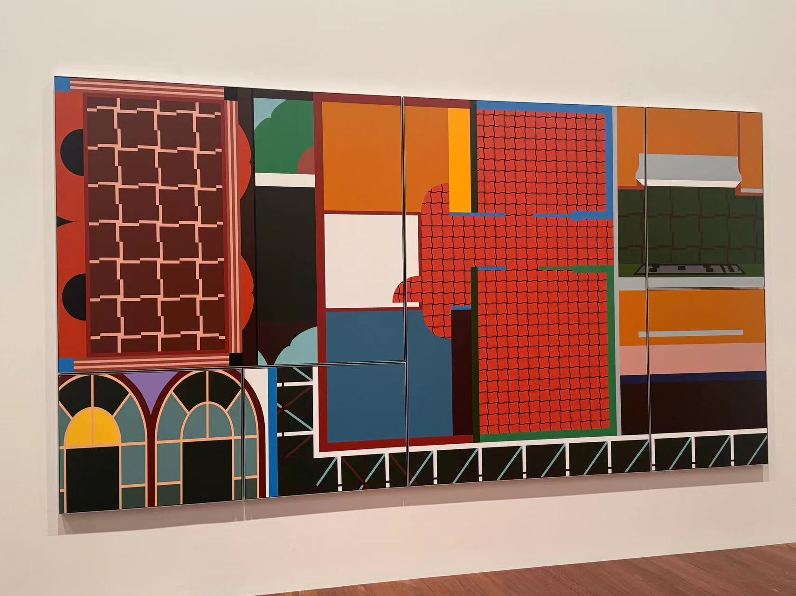
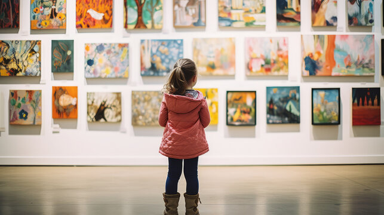
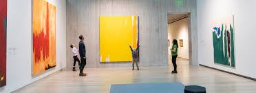
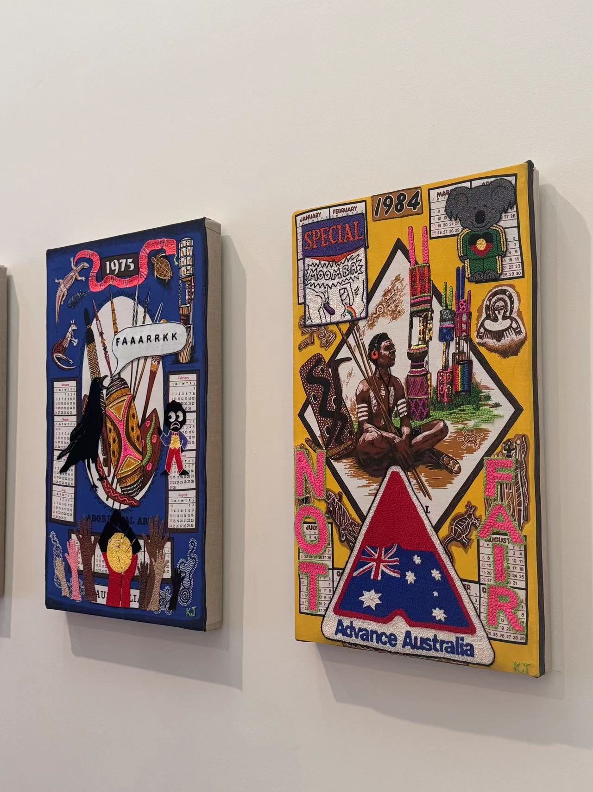
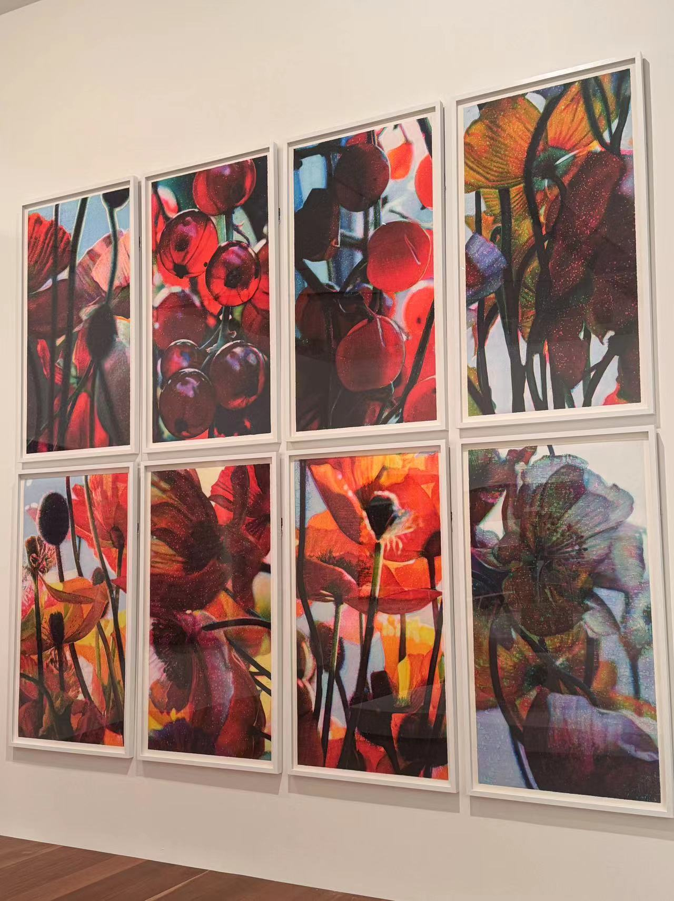

Abstract Art
Pedagogical Philosophy: Abstract art allows for the expression of complex ideas and emotions that might be difficult to communicate with words.





Museum Activities:
- Abstract Art Discussions: View abstract artworks and discuss what they might represent. Encourage children to share their interpretations and feelings.
- Abstract Creation Sessions: Children can create their own abstract pieces, inspired by what they’ve seen, to express personal ideas or emotions.
Values:
Abstract art fosters creativity and emotional expression, helping children and educators communicate on a deeper, more personal level.